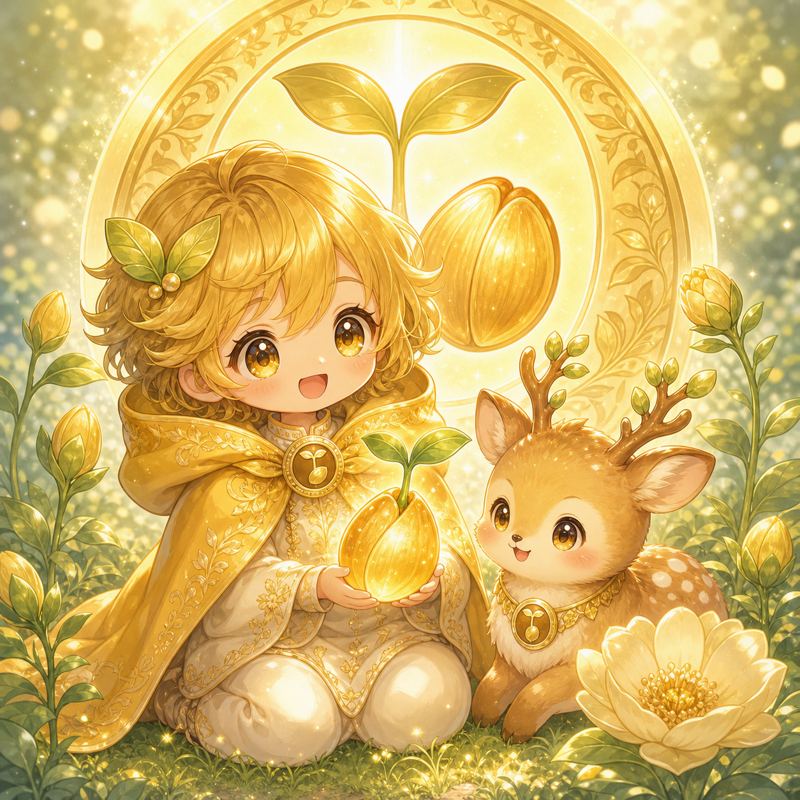

知識・開花・集中
マヤ暦20の紋章の4番目。黄色い種はその人の本質・才能・テーマとして顕れるエネルギーを象徴します。
黄色い種は「気づき・開花・探究心」を象徴する紋章で、知的好奇心と観察力が顕在意識として表に出ます。物事の根本や成り立ちを知りたい気持ちが強く、納得するまで調べ続けられる粘り強い探究力があります。一度興味を持ったことには深くはまり込み、専門的な知識を積み上げていく研究者気質の持ち主です。人の隠れた才能や可能性をいち早く見抜く観察力があり、「よくそんなことに気づいたね」と言われることが多いでしょう。的を射た指摘や言葉を自然と発することができ、周囲に「さすが」と感じさせる場面が多いタイプです。記念日や相手の好みをよく覚えていて丁寧に関係を築こうとしますが、相手のすべてを把握したいと思いすぎると窮屈に見えることもあるので注意しましょう。コツコツ積み重ねることが得意で、学びや運用を丁寧に続けることで財運が育まれます。多くのことに同時に興味を持ちやすいため、一つずつ順番に「花を咲かせる」意識を持つと力が分散せずに発揮されます。リスクを恐れすぎて殻に閉じこもらないことも大切で、ひとつの行動が新しい気づきを連鎖させます。頭や肩のコリ・水分不足に気をつけながら、食事・睡眠・運動のバランスを整えることが活力の維持につながります。適職は教育・コーチング・研究・専門職・アドバイザーなど、教える・分析する・才能を引き出す仕事全般です。「気づいているかどうか」が人生の豊かさを左右する紋章なので、日々の小さな気づきを大切に積み重ねていきましょう。
あなたの紋章を調べてみましょう